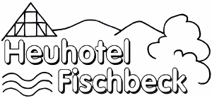

Links
Gemeindeinterne Links
Kirchengemeinde Vorra-Alfalter-Artelshofen
Feuerwehr Vorra und First Responder
Heuhotel Fischbeck

Schlaf mal im Heu und du fühlst dich wie neu!
Links zu anderen Kirwavereinen
Homepage des Eschenbacher Kirchweihvereins
Homepage des Henfenfelder Kirchweihvereins
Homepage des Reichenschwander Kirchweihvereins